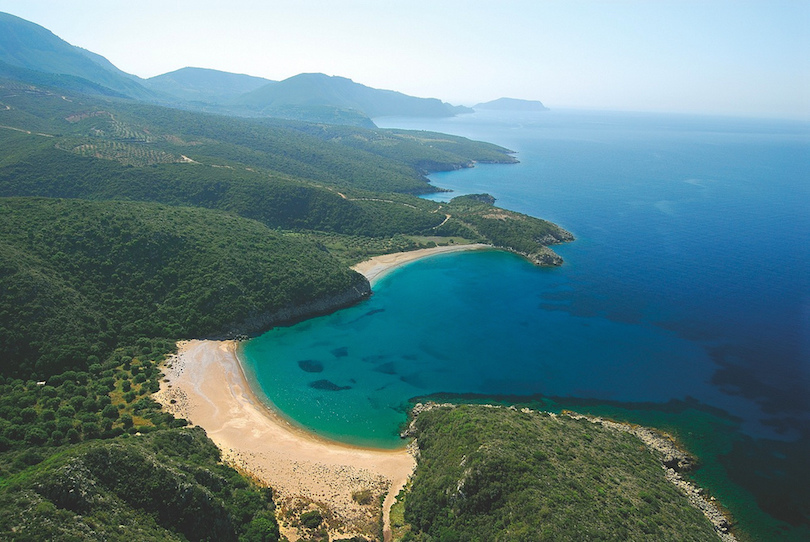
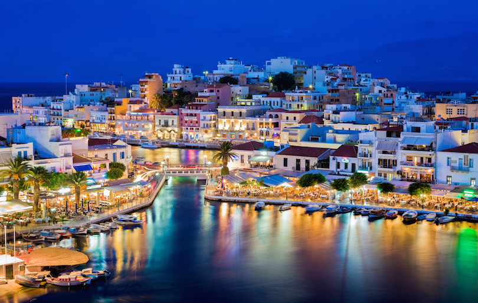
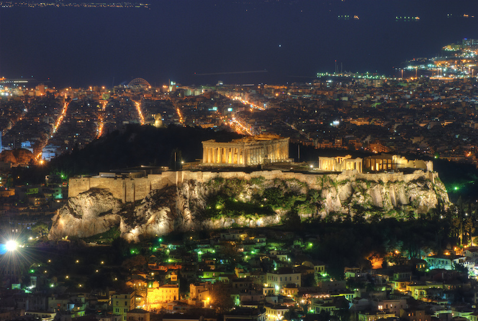
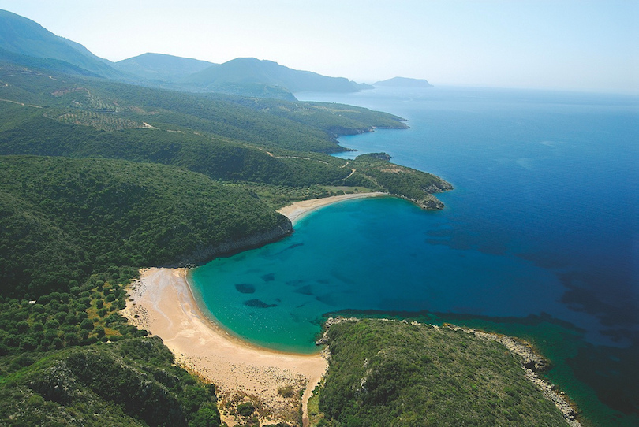
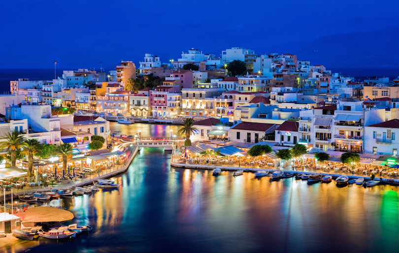
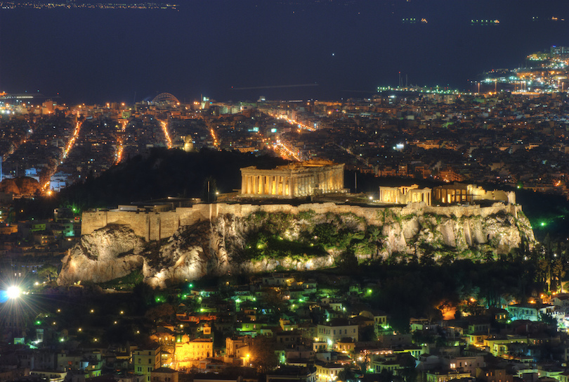

ABOUT SANTORINI, GREECE
A visit to Santorini is the ultimate gastronomic experience, as the island is a true culinary paradise! Treat your taste buds to some famous traditional products like cherry tomatoes, white egg plants, fava, caper and “hloró tyrí”, a special kind of fresh goat cheese found on the island, or why not try some of the exceptional wines produced from grapes grown in the volcanic soil of the island! Assyrtiko, Athyri, Aidani, Mantilaria and Mavrotragano are just some of the distinctive varieties that you can taste at the island’s famous wineries (some of them operate as a museum as well) or at restaurants.
GETTING TO SANTORINI, GREECE
You can travel either by plane (Athens International
Airport "Eleftherios Venizelos") or by ferryboat (Piraeus Port).
There are also links between Santorini and other Greek islands.
The flight is the quickest, easiest and most direct way as it
lasts more or less 40 minutes and you can book your tickets in
advance.
OTHER PLACES TO VISIT

Peloponnese
Shaped much like a large leaf, Peloponnese was
traditionally called Morea, which means mulberry leaf.
Located in the southernmost region of both Europe and
Greece, Peloponnese is a wide peninsula connected to the
mainland by the Rio-Antirrio bridge.
Interspersed with classical Greek temples, Venetian
fortresses, Byzantine churches and Mycenaean palaces,
Peloponnese echoes the ancient cultures and events from
its extensive history. Among these ancient ruins is Olympia,
where the first Olympic Games were hosted in honor of
Zeus.

Crete
The largest of the Greek islands, Crete is a
spacious land of pleasing contrasts where landscapes
range from stunning coastline to rugged mountains and
rolling countryside dotted with olive trees.
Bustling metropolitan cities spread beyond to quiet
villages centered around outdoor coffee shops. Steeped
in history, Crete still bears archaeological traces of
the many civilizations that inhabited it down through the
centuries.

Athens
Inhabited for more than 3,000 years, Athens is
widely known as the cradle of Western civilization
and the birthplace of democracy. The city presents
a confusing blend of historical and modern features.
Athens is famous for its archaeological ruins and monuments
such as the famous Acropolis, the Parthenon, the Ancient
Agora and the Theatre of Dionysos just to name a few.
However, Athens is not just about ancient ruins. This
bustling city is also an important center for business,
culture and nightlife.
OTHER PLACES TO VISIT
Peloponnese
Shaped much like a large leaf, Peloponnese was
traditionally called Morea, which means mulberry leaf.
Located in the southernmost region of both Europe and
Greece, Peloponnese is a wide peninsula connected to the
mainland by the Rio-Antirrio bridge.
Interspersed with classical Greek temples, Venetian
fortresses, Byzantine churches and Mycenaean palaces,
Peloponnese echoes the ancient cultures and events from
its extensive history. Among these ancient ruins is Olympia,
where the first Olympic Games were hosted in honor of
Zeus.

Crete
The largest of the Greek islands, Crete is a
spacious land of pleasing contrasts where landscapes
range from stunning coastline to rugged mountains and
rolling countryside dotted with olive trees.
Bustling metropolitan cities spread beyond to quiet
villages centered around outdoor coffee shops. Steeped
in history, Crete still bears archaeological traces of
the many civilizations that inhabited it down through the
centuries.
